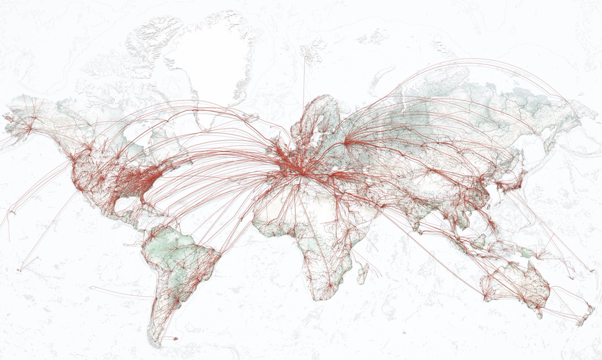
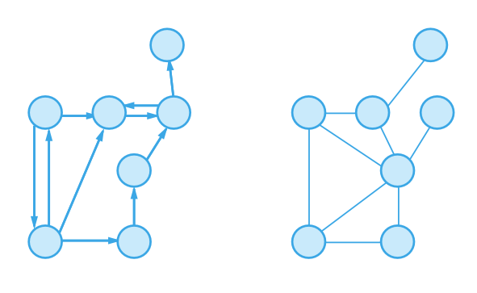
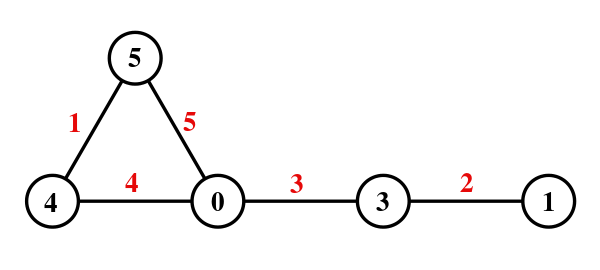

Visualización de redes y grafos
IIC2026 2021-2
Datasets de red
Visualización de redes y grafos
IIC2026 2021-2
Datasets de red
Representar situaciones donde existen relaciones entre dos o más ítems.
Compuestos por datos de tipo ítem (nodos) y de tipo enlace.
👱 → 🧑🍳 ↔ 🧑🌾
↑ ↕ ↑
🦹 → 🧑🔧 ↔ 🧑🏫
↓ ↓ ↕
🧑⚖️ ← 🧑🎨 ← 🧑🚀
Datasets de red

(Fuente: Flights to Rome: A Stunning Visualization of Earth’s Mobility )
Conceptos y términos
Relación
🧬 → 🧬 ↔ 🧬
↑ ↕ ↑
🧬 → 🧬 ↔ 🧬
↓ ↓ ↕
🧬 ← 🧬 ← 🧬
Relación
🧬 → 🧬 ↔ 🧬
↑ ↕ ↑
🧬 → 🧬 ↔ 🧬
↓ ↓ ↕
🧬 ← 🧬 ← 🧬
Nodos o vertices: 🧬
Enlaces, aristas o conexiones: ↔, → , ←
Grafos

(Fuente: Graph Theory (Wikipedia) )
Red dirigida o no dirigida

(Fuente: raywenderlich.com )
Red etiquetadas o con pesos

(Fuente: RDF Graph Data Model )
Red etiquetadas o con pesos

(Fuente: Graph labeling (Wikipedia) )
Jerarquías y/o árboles

(Fuente: Trees (MAS341: Graph Theory) )